1.1 ЗАДАЧА ЗА РЕШЕНИЕ
Задача за решение може да се създаде към съпровождащ документ по дело или документ от обща администрация. Задача за решение може да се изпрати на потребител или структура (група потребители) и за решения по заявления за достъп до обществена информация или заявления свързани с достъп до ЕПЕП.
След въвеждане на информация за входящ съпровождащ документ (6.1.2 Регистриране на съпровождащ документ) или входящ документ от обща администрация (6.1.3 Регистриране на документ от обща администрация) и избор на бутон в таб Задачи има възможност за създаване на задача за решение. Задачата за решение се използва за преглед и въвеждане на решения по регистриран документ.
Създаването на нова задача за решение
посредством избор на бутон
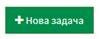
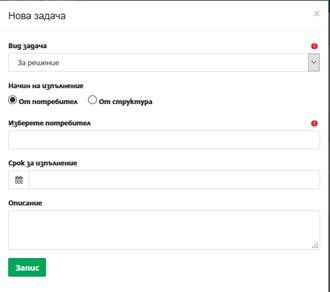
- Вид задача – избира се задача За решение;
- Начин на изпълнение – избира се посредством маркиране на радио бутон за изпълнение на задачата от потребител или от структура. При насочване на задача към потребител тя се визуализира в персонализирания му екран и системата очаква приемане и изпълнение само от конкретния потребител. При избор за изпълнение от структура, задачата се визуализира в персонализираните екрани на всички служители, назначени в съответната структура (организационна единица на съда). Системата очаква приемане от изпълнител, след приемане от първия потребител задачата се премахва от персонализираните екрани на останалите потребителите. Системата очаква изпълнение само от потребителя приел задачата;
- Изберете потребител – при въвеждане на минимум три последователни символа, системата автоматично търси и предлага за избор списък от потребители, към които да бъде насочена задачата;
- Срок за изпълнение – при необходимост се въвежда срок за изпълнение на поставената задача, като този срок се визуализира в календара на изпълнителя на задачата;
- Описание – поясняващо поле, в което могат да бъдат вписани допълнителни данни, по преценка на потребител. Полето няма задължителен характер.
Избира се бутон
 с което задачата е успешно създадена.
с което задачата е успешно създадена.
След запис на задачата към регистрирания документ в таб Задачи се визуализира следната информация:
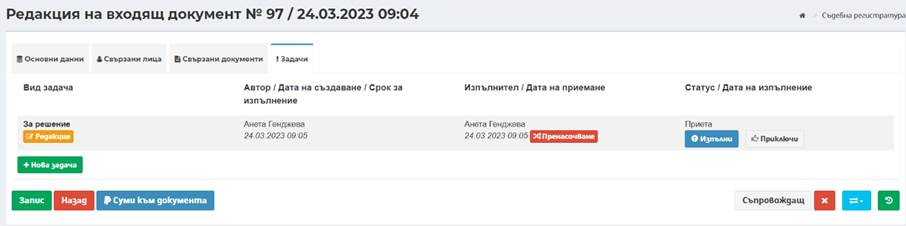
При насочване на задачата за изпълнение от друг потребител, създадената задача може да бъде редактирана от автора ѝ, до момента на приемане на задачата за изпълнение, посредством бутон Редакция. При избор на бутон Редакция се отваря модален прозорец със същите полета каквито при създаване на нова задача.
Забележка: Ако задачата е насочена към и се очаква изпълнение от един и същи потребител, бутон Редакция е активен до пренасочване или изпълнение на задачата.
Потребителят, към когото е насочена задачата, получава нотификация за нова задача в инструмент Задачи в лентата с менюта и инструменти. Задачата се визуализира и в панел Моите задачи в Персонализирания екран на потребителя, а ако в задачата е посочен краен срок за изпълнение, съответно се визуализира и в панел Календар:
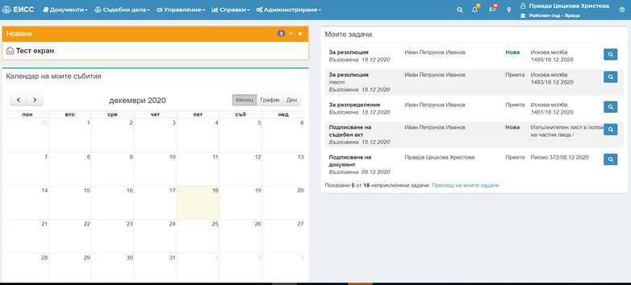
През бутон Преглед
от панел Моите задачи на началния екран на системата или бутон Преглед
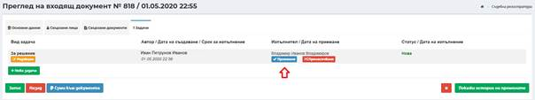
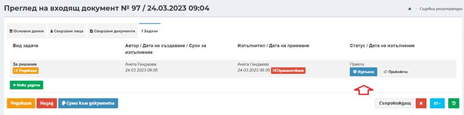
Бутон Пренасочване е достъпен както за автора на задачата, така и за получателя на задачата. Посредством този бутон, задачата може да бъде пренасочена за изпълнение от друг потребител.
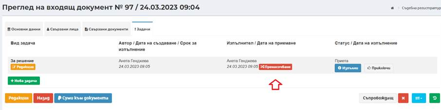
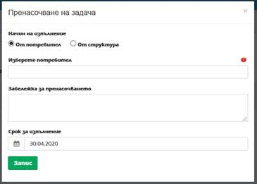
При пренасочване на задачата за изпълнение от друг служител се отваря модален прозорец със следните полета:
- Начин на изпълнение – с аналогичните опции, както при създаване на задачата, избира се посредством маркиране на радио бутон за изпълнение на задачата от потребител или от структура.
- Изберете потребител – при въвеждане на минимум три последователни символа, системата автоматично търси и предлага за избор списък от потребители, към които да бъде насочена задачата;
- Забележка за пренасочването – поясняващо поле, в което могат да бъдат вписани допълнителни данни, при необходимост. Полето няма задължителен характер;
- Срок за изпълнение – при необходимост се въвежда срок за изпълнение на поставената задача, като този срок се визуализира в календара на изпълнителя на задачата.
Пренасочването на задачата, автоматично генерира нов запис за задача със съответните данни:
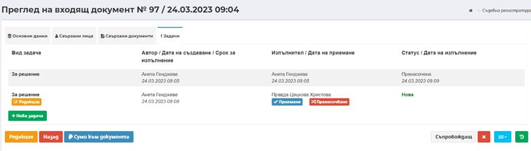
След приемането на задачата визуализират два нови бутона по отношение на самото изпълнение на задачата: Изпълни или Приключи.
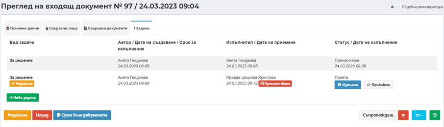
При насочване на задача за решение от същия потребител, който създава задача, задачата се приема автоматично и потребителят може да премине директно към нейното изпълнение, посредством избор на бутон Изпълни.
При приемане на задачата за изпълнение се визуализират екрани за решение в зависимост от документа, по който се въвежда решение.
1.1.1 Решения по входящи документи от обща администрация
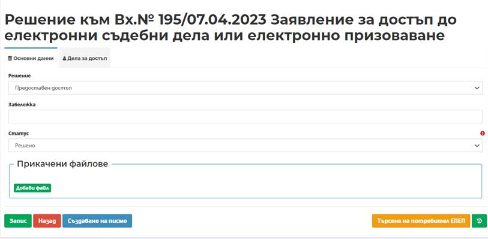
- Поле Решение – избор на решение за предоставяне – предоставен достъп, предоставен частичен достъп или отказан достъп;
- Забележка – въвежда се допълнителна информация при необходимост. Полето не е със задължителен характер;
- Статус – избира се статуса на решението – чернова, новообразувано или решено, при отразяване на промяна.
След избор на
бутон Запис 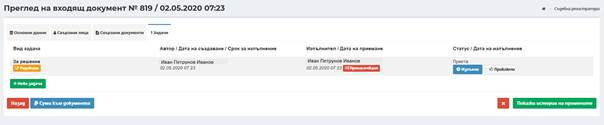
Следващата стъпка, е свързана с добавяне на подателя на заявката по делото, за да може той да получи достъп до делото и в случай, че е заявил призоваване през ЕПЕП, то това да бъде отбелязано в системата. В случая се използва бутон „Търсене на. потребител в ЕПЕП“
Бутонът предоставя бърз достъп до меню Администриране -> Номенклатури -> Интеграции -> ЕПЕП потребители, от където се изтеглят потребителите в ЕПЕП.
След като се намери конкретния подател на заявлението, чрез едно от полетата Вид потребител, Имена или електронна поща се визуализира списъчен екран с неговите данни. В края на реда срещу името, посредством бутон Редакция се отваря екран, в лявата част на който са видими данните за съответния потребител, а в дясната част е секция „Участие в дела“. чрез бутон Добави се добавя участие към съответно дело.
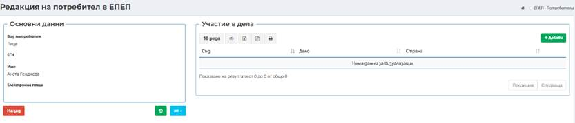
През бутон Добави се отваря нов прозорец, в който се попълва следната информация:
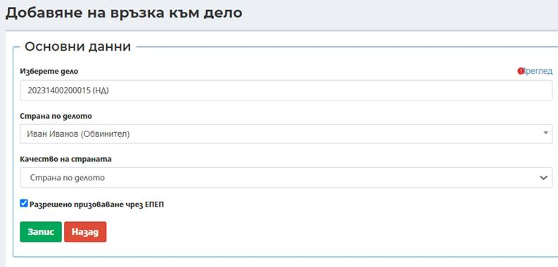
- Изберете дело – записва се номера на конкретното дело;
- Страна по делото – избира се конкретното лице;
- Качество на страната – посредством падащо меню се избира дали е срана по дело или адвокат;
- Чекбокс Разрешено призоваване чрез ЕПЕП.
След избор на бутон Запис на екара се визуализира следната информация:
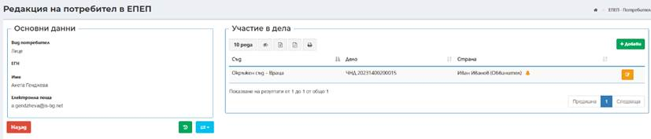
Важно: Когато достъпа до дело се добави през Таб Дела за достъп, информацията ще се отрази в електронната папка на делото.
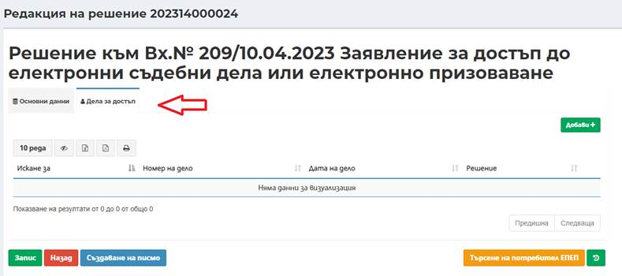
След избор на бутон Запис
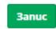
Потребителят в ЕИСС има възможност да създаде и изходящо писмо с избор на бутон Създаване на писмо . Отваря се диалогов прозорец:
- Поле Вид документ – избира се от падащ списък вид документ по дела или от обща администрация;
- Поле Основен вид документ – избира се от падащ списък;
- Поле Точен вид документ – в зависимост от избрания основен вид документ се зарежда номенклатура с възможните стойности за точен вид документ;
- Поле Бланка – в зависимост от избрания точен вид документ се зарежда номенклатура с възможните стойности за бланка на документ. Има възможност за създаване на писмо без бланка;
- Поле Автор – автоматично се зарежда потребителя, който изготвя писмото в системата. Има възможност при необходимост да се смени автора на писмото;
- Поле Съдия – вписват се имената на конкретния съдия, издал решението
- Поле Статус – избира се статус на писмото;
- Поле Описание – въвежда се допълнителна информация при необходимост. Полето не е със задължителен характер.